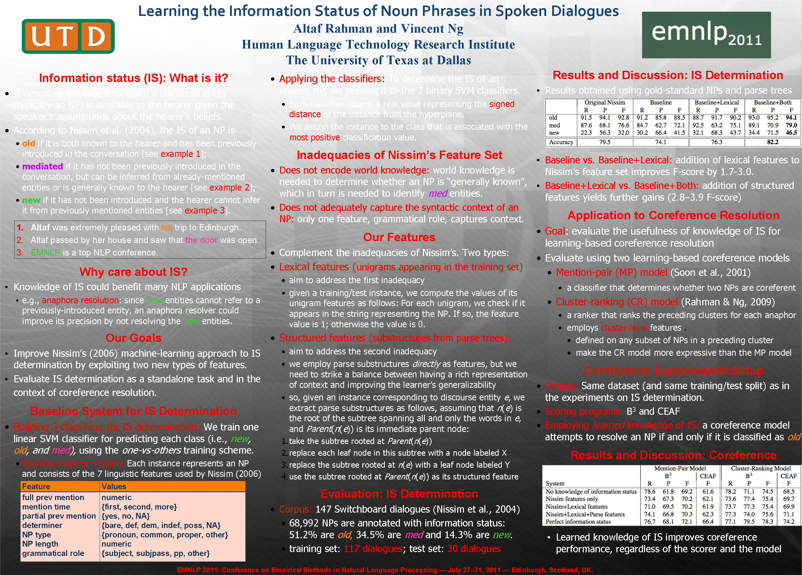

Learning the Information Status of Noun Phrases in Spoken Dialogues
Altaf Rahman and Vincent Ng.
Proceedings of the 2011 Conference on Empirical Methods in Natural Language Processing, pp. 1069-1080, 2011.
Click here for the
PostScript or PDF
version.
Abstract
An entity in a dialogue may be old, new, or
mediated/inferrable with respect to the hearer's beliefs.
Knowing the information status of the entities participating in a
dialogue can therefore facilitate its interpretation.
We address the under-investigated problem of automatically determining the
information status of discourse entities.
Specifically,
we extend Nissim's (2006) machine learning approach
to information-status determination with lexical and structured features,
and exploit learned knowledge of the
information status of each discourse entity for
coreference resolution.
Experimental results on a set of Switchboard dialogues reveal that
(1) incorporating our proposed features into Nissim's
feature set enables our system to achieve state-of-the-art
performance on information-status classification,
and (2) the resulting information can be used to improve
the performance of learning-based coreference resolvers.
Train-test split
Here are the lists of names of the files from the NXT corpus that we used for training and testing.
BibTeX entry
@InProceedings{Rahman+Ng:11c,
author = {Altaf Rahman and Vincent Ng},
title = {Learning the Information Status of Noun Phrases in Spoken Dialogues},
booktitle = {Proceedings of the 2011 Conference on Empirical Methods in Natural Language Processing},
pages = {1069--1080},
year = 2011
}
